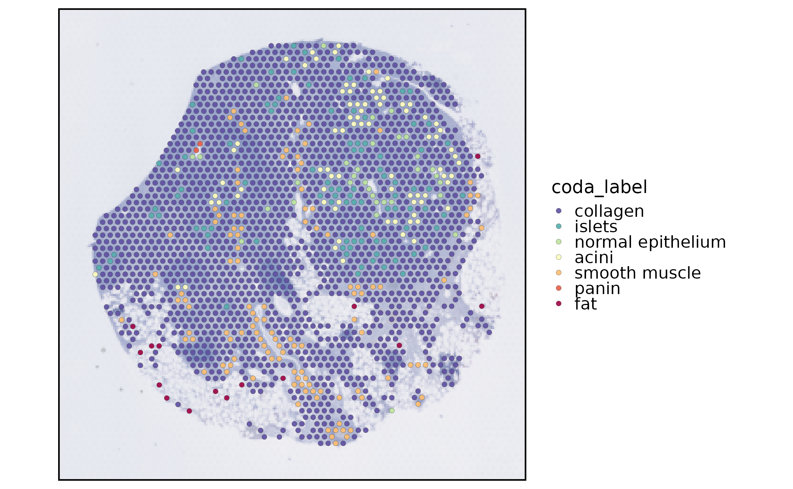
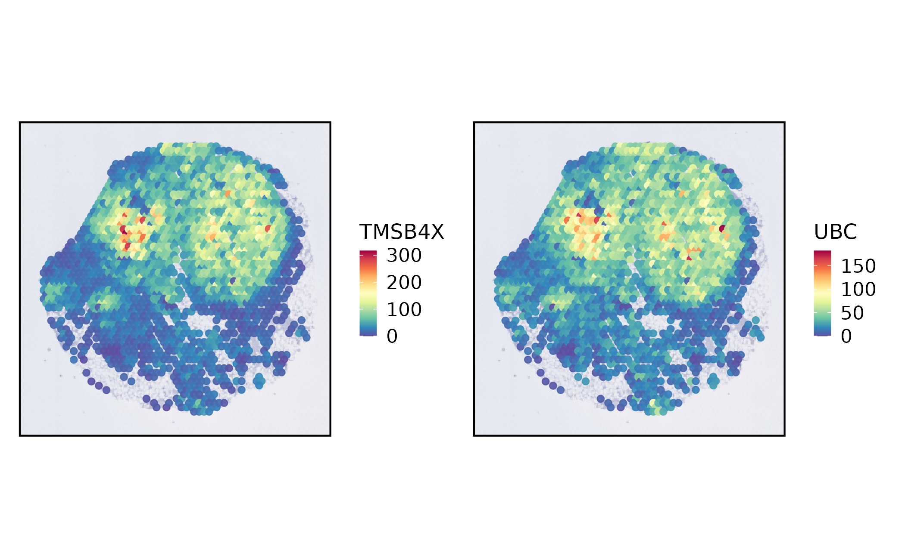
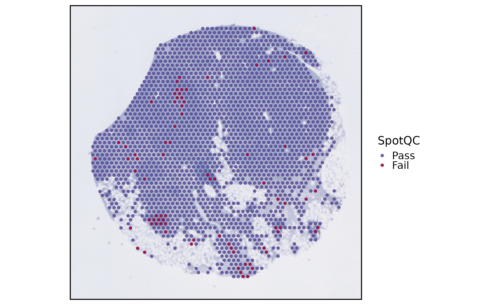
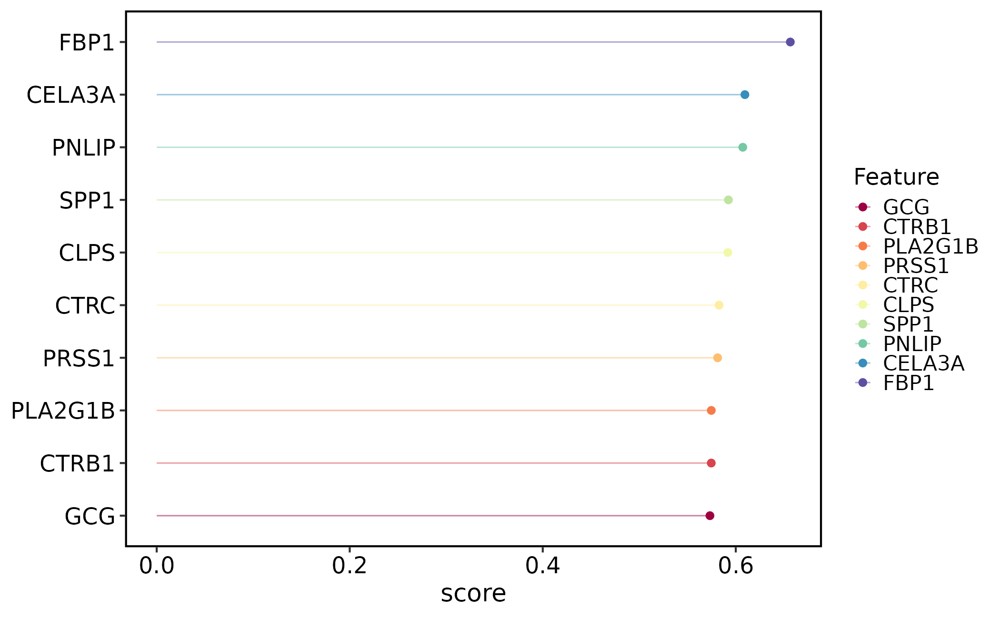
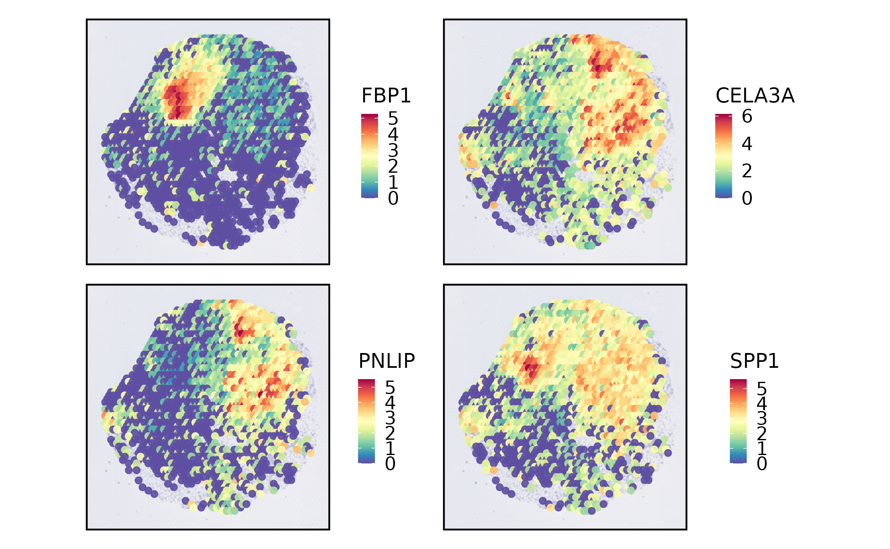
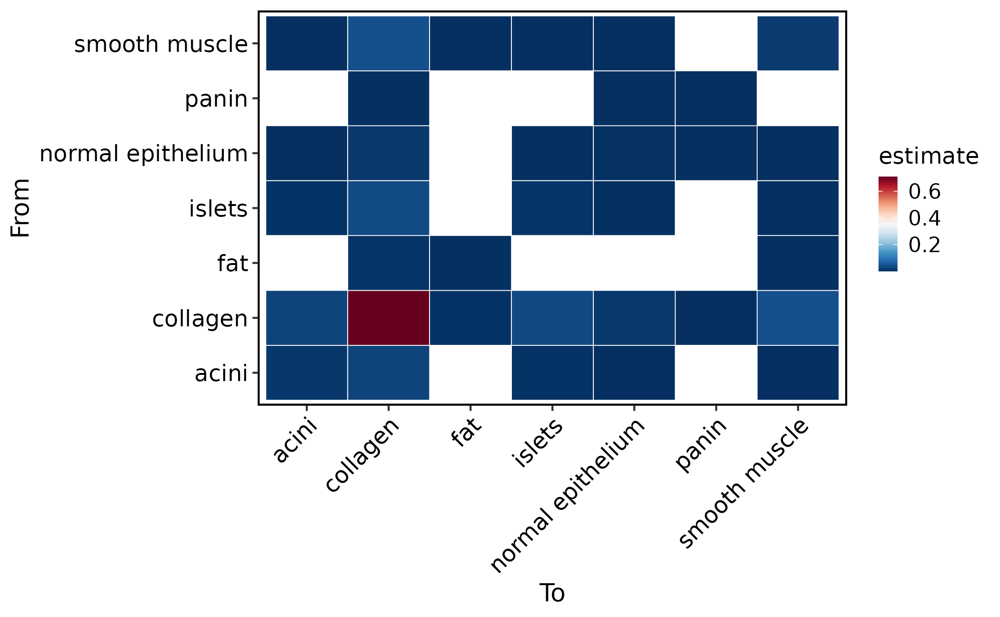
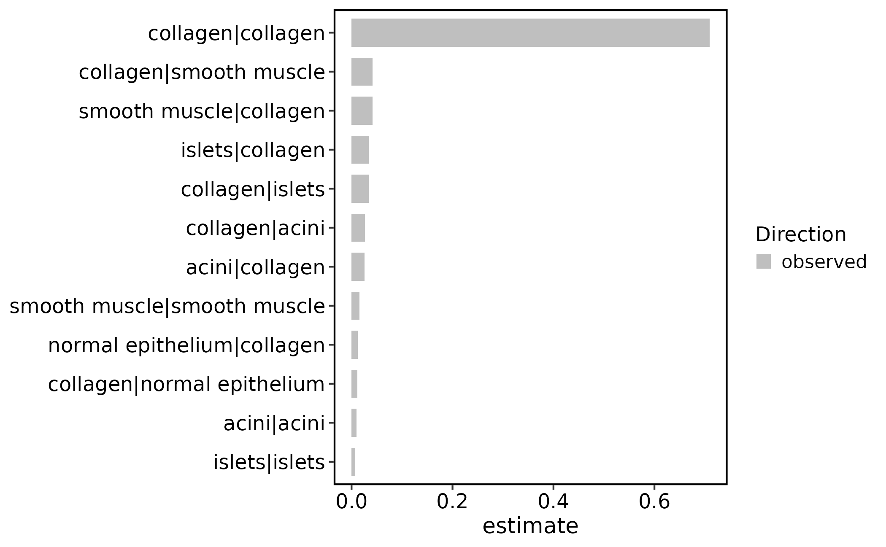

Spatial transcriptomics main workflow
Source:vignettes/spatial-main-workflow.Rmd
spatial-main-workflow.RmdThis article shows the recommended first-pass SCOP workflow for a spatial transcriptomics object. It uses the bundled Visium pancreas subset and keeps the main path short: inspect the object, run the spatial workflow, check summaries, plot spatial features, and branch into optional backends only when the question requires them.
It is not a catalogue of every spatial backend. Use method pages for backend specific parameters and dependency notes.
Read the workflow as an evidence ladder: first confirm coordinates and image orientation, then compute QC and spatially variable features, then add domains, deconvolution, or neighborhood models only when they answer the biological question.
Load a Spatial Object
Start with a Seurat object that has expression, metadata, and spatial
coordinates. The bundled visium_human_pancreas_sub object
has a Spatial assay, a slice1 image, and
metadata coordinates.
library(scop)
#> ⬢ . ⬡ ⬢ .
#> _____ _________ ____
#> / ___// ___/ __ ./ __ .
#> (__ )/ /__/ /_/ / /_/ /
#> /____/ .___/.____/ .___/
#> /_/
#> ⬢ . ⬡ . ⬢
#> ------------------------------------------------------------
#> Version: 0.8.9 (2026-07-20 update)
#> Website: https://mengxu98.github.io/scop/
#>
#> Python environment initialization is disabled
#> To enable it, set: options(scop_env_init = TRUE)
#>
#> The message can be suppressed by:
#> suppressPackageStartupMessages(library(scop))
#> or options(log_message.verbose = FALSE)
#> ------------------------------------------------------------
data(visium_human_pancreas_sub)
spatial <- visium_human_pancreas_sub
SeuratObject::DefaultAssay(spatial) <- "Spatial"
SeuratObject::Images(spatial)
#> [1] "slice1"
head(spatial@meta.data[, c("x", "y", "coda_label")])
#> x y coda_label
#> TGGTATCGGTCTGTAT-1 3859 662 collagen
#> ATTATCTCGACAGATC-1 3914 662 collagen
#> TGAGATCAAATACTCA-1 3969 662 collagen
#> CTGGTCCTAACTTGGC-1 4024 662 islets
#> ATAGTCTTTGACGTGC-1 4079 662 collagen
#> GGGTGGTCCAGCCTGT-1 4134 662 collagenBefore running methods, make one direct map. This checks whether coordinates, image orientation, labels, and the default spatial theme are sensible. If this first map is rotated, mirrored, or shifted, downstream spatial domains and neighborhood results will be difficult to interpret even if the model runs.
SpatialSpotPlot(
spatial,
group.by = "coda_label"
)
SpatialSpotPlot(
spatial,
features = rownames(spatial)[1:2],
assay = "Spatial",
layer = "counts"
)
Run the Basic Spatial Workflow
standard_scop(workflow = "spatial") is the shortest
entry point for a first-pass spatial analysis. Keep optional domain
clustering and deconvolution off at first. This makes the first run fast
and gives you QC and spatial variable features before choosing heavier
backends.
spatial <- standard_scop(
spatial,
workflow = "spatial",
assay = "Spatial",
image = "slice1",
coord.cols = c("x", "y"),
do_spot_qc = TRUE,
do_spatial_variable_features = TRUE,
spatial_variable_features_params = list(
method = "moran",
nfeatures = 50
),
do_spatial_cluster = FALSE,
do_deconvolution = FALSE
)
#> ℹ [2026-07-28 03:42:22] Start standard spot-level spatial workflow...
#> ◌ [2026-07-28 03:42:22] Running spot-level quality control
#> ✔ [2026-07-28 03:42:22] 1907 spots passed QC and 79 spots failed QC
#> ℹ [2026-07-28 03:42:22] Start standard processing workflow...
#> ℹ [2026-07-28 03:42:22] Checking a list of <Seurat>...
#> ! [2026-07-28 03:42:22] Data 1/1 of the `srt_list` is "unknown"
#> ℹ [2026-07-28 03:42:22] Perform `NormalizeData()` with `normalization.method = 'LogNormalize'` on 1/1 of `srt_list`...
#> ℹ [2026-07-28 03:42:22] Perform `FindVariableFeatures()` on 1/1 of `srt_list`...
#> ℹ [2026-07-28 03:42:22] Use the separate HVF from `srt_list`
#> ℹ [2026-07-28 03:42:23] Number of available HVF: 2000
#> ℹ [2026-07-28 03:42:23] Finished check
#> ℹ [2026-07-28 03:42:23] Perform `ScaleData()`
#> ℹ [2026-07-28 03:42:23] Perform pca linear dimension reduction
#> ℹ [2026-07-28 03:42:24] Use stored estimated dimensions 1:30 for Standardpca
#> ℹ [2026-07-28 03:42:24] Perform `Seurat::FindClusters()` with `cluster_algorithm = 'louvain'` and `cluster_resolution = 0.6`
#> ℹ [2026-07-28 03:42:25] Reorder clusters...
#> ℹ [2026-07-28 03:42:25] Skip `log1p()` because `layer = data` is not "counts"
#> ℹ [2026-07-28 03:42:25] Perform umap nonlinear dimension reduction
#> ✔ [2026-07-28 03:42:29] Standard processing workflow completed
#> ◌ [2026-07-28 03:42:29] Running spatial variable feature detection
#> ✔ [2026-07-28 03:42:31] Stored 50 spatial variable features
#> ✔ [2026-07-28 03:42:31] Standard spot-level spatial workflow completedAfter the run, look at the stable result locations before making more
plots. Most spatial wrappers write method parameters and summaries under
srt@tools. Spatial variable features are genes whose
expression varies with spatial position according to the selected
method. They are candidates for spatial patterning, not automatically
domain markers.
names(spatial@tools)
#> [1] "GSE254829_coda_table" "SpatialVariableFeatures"
#> [3] "standard_spatial_scop"
spatial@tools$SpatialVariableFeatures$summary
#> $n_features
#> [1] 2000
#>
#> $top_features
#> [1] "FBP1" "CELA3A" "PNLIP" "SPP1" "CLPS" "CTRC"
#> [7] "PRSS1" "PLA2G1B" "CTRB1" "GCG" "CEL" "CPB1"
#> [13] "CPA2" "SPINK1" "TTR" "CFTR" "CPA1" "KRT8"
#> [19] "ELF3" "SFRP2" "SLC4A4" "ANXA4" "PNLIPRP1" "LCN2"
#> [25] "MMP7" "KRT18" "SYCN" "MUSTN1" "DEFB1" "TSPAN8"
#> [31] "IGFBP5" "PDIA2" "FN1" "KRT7" "EPCAM" "MYL9"
#> [37] "ATP1B1" "JCHAIN" "GATM" "HOMER2" "CITED4" "PMEPA1"
#> [43] "SST" "GPX2" "TAGLN" "FXYD2" "NR5A2" "CRP"
#> [49] "GCNT3" "SERPINA5"
#>
#> $top_feature_summary
#> feature rank score
#> 1 FBP1 1 0.6565080
#> 2 CELA3A 2 0.6094565
#> 3 PNLIP 3 0.6072718
#> 4 SPP1 4 0.5923706
#> 5 CLPS 5 0.5917626
#> 6 CTRC 6 0.5826625
#> 7 PRSS1 7 0.5811954
#> 8 PLA2G1B 8 0.5746198
#> 9 CTRB1 9 0.5745952
#> 10 GCG 10 0.5732244
#> 11 CEL 11 0.5684299
#> 12 CPB1 12 0.5656297
#> 13 CPA2 13 0.5635837
#> 14 SPINK1 14 0.5550198
#> 15 TTR 15 0.5512296
#> 16 CFTR 16 0.5332586
#> 17 CPA1 17 0.5212444
#> 18 KRT8 18 0.5093506
#> 19 ELF3 19 0.4804406
#> 20 SFRP2 20 0.4799576
head(spatial@tools$SpatialVariableFeatures$summary$top_features)
#> [1] "FBP1" "CELA3A" "PNLIP" "SPP1" "CLPS" "CTRC"Plot the First Results
The default spatial maps hide axes and crop to the observed spots.
Use show_axes = TRUE only when debugging coordinates.
SpotQC summarizes spot-level quality-control status.
Spatial feature surfaces should be interpreted together with raw spot
maps, because smoothing can make sparse signal look broader than it
is.
SpatialSpotPlot(
spatial,
group.by = "SpotQC"
)
SpatialVariableFeaturePlot(
spatial,
plot_type = "summary"
)
SpatialVariableFeaturePlot(
spatial,
plot_type = "surface",
nfeatures = 4
)
Add Spatial Domains When Needed
Run a domain method only after the baseline object looks correct. BayesSpace is a common Visium choice. BANKSY and SmoothClust are useful alternatives when their assumptions match the data and optional dependencies are available. Domain labels are unsupervised spatial clusters. They are useful for segmenting tissue regions, but they need marker genes, histology, or reference labels before being named biologically.
spatial_bayes <- standard_scop(
spatial,
workflow = "spatial",
assay = "Spatial",
image = "slice1",
coord.cols = c("x", "y"),
do_spot_qc = FALSE,
do_spatial_variable_features = FALSE,
do_spatial_cluster = TRUE,
spatial_cluster_method = "BayesSpace",
spatial_q = 3
)
SpatialSpotPlot(
spatial_bayes,
group.by = "BayesSpace_cluster"
)For other domain backends, keep the output contract in mind: cluster
labels should land in metadata and method details should stay under
srt@tools.
spatial <- RunBANKSY(
spatial,
assay = "Spatial",
layer = "counts",
coord.cols = c("x", "y"),
cluster_colname = "BANKSY_cluster"
)
SpatialSpotPlot(spatial, group.by = "BANKSY_cluster")Add Cell Composition Only With a Reference
For spot-level data, deconvolution depends more on reference quality than on the wrapper choice. Use a matched single-cell reference, then inspect dominant cell types and maximum proportions before interpreting spatial biology.
spatial <- RunSpatialDWLS(
spatial,
reference = reference,
reference_label = "celltype",
assay = "Spatial",
reference_assay = "RNA",
coord.cols = c("x", "y"),
prefix = "SpatialDWLS"
)
spatial@tools$SpatialDWLS$summary
SpatialSpotPlot(
spatial,
group.by = "SpatialDWLS_dominant_type"
)
SpatialSpotPlot(
spatial,
group.by = "SpatialDWLS_dominant_type",
plot_type = "pie"
)RCTD, SPOTlight, CARD, and
STdeconvolve follow the same practical rule: first check
the result summary, then visualize dominant labels, maximum proportions,
and selected proportions. Deconvolution estimates cell-type composition
per spot. It is constrained by the reference, so missing reference cell
types can be misassigned to the closest available label.
Add Neighborhood or Context Models Last
Neighborhood methods answer a different question from domain clustering. Use them after labels are stable, either from metadata, clustering, or deconvolution.
spatial <- RunSpatialNeighborhood(
spatial,
group.by = "coda_label",
coord.cols = c("x", "y"),
k = 6
)
#> ✔ [2026-07-28 03:42:35] Spatial neighborhood analysis completed ("observed")
spatial@tools$SpatialNeighborhood$summary
#> $n_pairs
#> [1] 35
#>
#> $n_edges
#> [1] 11916
#>
#> $top_pairs
#> method comparison condition from to estimate
#> 7 observed all all collagen collagen 0.70955018
#> 31 observed all all collagen smooth muscle 0.04170863
#> 12 observed all all smooth muscle collagen 0.04162471
#> 9 observed all all islets collagen 0.03423968
#> 17 observed all all collagen islets 0.03407184
#> 2 observed all all collagen acini 0.02626720
#> 6 observed all all acini collagen 0.02526015
#> 35 observed all all smooth muscle smooth muscle 0.01602887
#> 10 observed all all normal epithelium collagen 0.01216851
#> 22 observed all all collagen normal epithelium 0.01166499
#> statistic pval FDR direction sample subject count total fraction
#> 7 NA NA NA observed sample1 sample1 8455 11916 0.70955018
#> 31 NA NA NA observed sample1 sample1 497 11916 0.04170863
#> 12 NA NA NA observed sample1 sample1 496 11916 0.04162471
#> 9 NA NA NA observed sample1 sample1 408 11916 0.03423968
#> 17 NA NA NA observed sample1 sample1 406 11916 0.03407184
#> 2 NA NA NA observed sample1 sample1 313 11916 0.02626720
#> 6 NA NA NA observed sample1 sample1 301 11916 0.02526015
#> 35 NA NA NA observed sample1 sample1 191 11916 0.01602887
#> 10 NA NA NA observed sample1 sample1 145 11916 0.01216851
#> 22 NA NA NA observed sample1 sample1 139 11916 0.01166499
SpatialNeighborhoodPlot(spatial, plot_type = "heatmap")
SpatialNeighborhoodPlot(spatial, plot_type = "stat", top_n = 12)
With method = NULL, SCOP computes native observed KNN or
radius summaries when split.by is absent and preserves the
historical spicyR route when split.by is supplied. For new
differential neighborhood analyses, request spicyR explicitly and
provide the condition column; SCOP errors before execution if that
design is incomplete.
spatial <- RunSpatialNeighborhood(
spatial,
group.by = "coda_label",
method = "spicyR",
split.by = "condition",
sample.by = "sample"
)
SpatialNeighborhoodPlot(spatial, plot_type = "network", top_n = 12)Use RunStatialKontextual() when you have explicit
from, to, and parent cell
populations. Use RunMistyR() when the question is
feature-level local or broader spatial context rather than pairwise
label enrichment. Both are independent producers rather than
RunSpatialNeighborhood() method choices. HoodscanR remains
unimplemented. Neighborhood enrichment is label-level spatial
association. Context models are feature-level spatial association. Keep
those interpretations separate in reports.
Use the shared discovery APIs before choosing an optional method. They read one registry, so the method list, backend diagnosis, result keys, coordinate contract, and recommended plot cannot drift into separate hard-coded lists.
ListSpatialMethods(task = "neighborhood")
SpatialBackendStatus(method = c("RunSpatialNeighborhood", "RunMistyR"))
SpatialResultInfo(spatial)New small-method results use schema v1 while keeping method-specific
fields at their historical top-level paths. Read a normalized copy
through GetSpatialResult() instead of depending on the
internal @tools layout. Custom tool_name
values remain discoverable. Legacy Giotto, SPATA2, and Semla results are
adapted only in the returned copy and are never migrated in place.
coords <- SpatialCoordinates(spatial, image = "slice1", space = "raw")
network_result <- GetSpatialResult(spatial, tool_name = "SpatialNetwork")
network_graph <- GetSpatialGraph(
res = network_result,
format = "sparse",
value = "weight"
)
SpatialResultInfo(spatial, detail = "graphs")Distance-sensitive methods retain
coordinate_space = "legacy_display" as the compatibility
default in this release. Set coordinate_space = "raw" when
radius or distance values must stay in original acquisition units. Plot
functions continue to map results to display coordinates by cell or spot
ID. Objects with multiple spatial images must always select one
explicitly with image; analysis, plotting, and framework
conversion never silently use the first image. A future release will
make raw coordinates the default for all distance-sensitive
producers.
spatial <- RunMistyR(
spatial,
assay = "Spatial",
layer = "data",
features = head(spatial@tools$SpatialVariableFeatures$summary$top_features, 20),
coord.cols = c("x", "y"),
views = "para"
)
spatial@tools$MistyR$summary
MistyRPlot(spatial, type = "improvements")For label-level contextual scores, use
StatialKontextualPlot(spatial) after
RunStatialKontextual(). These dedicated plots summarize
stored backend output and never rerun the analysis.
Add Spatially Constrained Communication Deliberately
RunCellChat() and RunSpatialCellChat()
answer different questions. The first estimates expression-supported
communication without a physical spatial constraint. The second uses
micron-scale distances and stores its group-level table under the
distinct method name "SpatialCellChat", so the two results
can coexist in spatial@tools$CCC without overwriting one
another.
Choose the analysis level from the observation represented by each column:
-
"cell"for segmented cells such as Xenium or CosMx; -
"spot"for spot/domain communication, which must not be described as direct cell-type communication; -
"composition"for Visium spots with a spot-by-cell-type proportion matrix.
Distance parameters are always interpreted in microns. Micron
coordinates use ratio = 1. For Visium full-image pixel
coordinates, RunSpatialCellChat() can derive the conversion
ratio as 65 / spot_diameter_fullres when the selected image
contains exactly one trusted full-resolution spot diameter; otherwise
provide ratio explicitly. Never substitute a low-resolution
display scale. This article uses one slice; multi-sample objects are run
independently and require an explicit sample.by and named
image mapping. Check the optional backend without changing the
environment with
SpatialBackendStatus(backend = "spatialcellchat").
spatial <- RunSpatialCellChat(
spatial,
group.by = "coda_label",
image = "slice1",
technology = "visium",
analysis.level = "spot",
coordinate.unit = "pixel",
tol = 32.5,
species = "Homo_sapiens",
database = "protein",
store.object = "minimal"
)
CCCNetworkPlot(spatial, method = "SpatialCellChat", plot_type = "circle")
CCCHeatmap(spatial, method = "SpatialCellChat", plot_type = "bubble")
SpatialCellChatPlot(spatial, plot_type = "incoming")
SpatialResultInfo(spatial, method = "RunSpatialCellChat")
result <- GetSpatialResult(spatial, method = "RunSpatialCellChat")store.object = "minimal" stores normalized interaction,
pathway, network, coordinate, and diagnostic results but not the large
native S4 object or a materialized cell-by-cell-by-LR edge table. Use
"full" only when native SpatialCellChat downstream analysis
is required, then retrieve it with
GetCCCObject(method = "SpatialCellChat").
Visium spots form a hexagonal acquisition grid, but six-neighbor topology is not a replacement for the Euclidean diffusion model. Contact-dependent signaling is therefore rejected in spot mode. P-values from spatial permutation and non-spatial CellChat analyses also have different null models and should not be compared as if they were interchangeable.
What to Report
A compact first-pass spatial report should include:
- the source object, assay, image, and coordinate columns;
- spot or cell counts after filtering;
- top spatial variable features and the method used;
- the domain method, cluster count, and domain sizes if clustering was run;
- deconvolution dominant labels and maximum proportions if composition was run;
- neighborhood or context summaries only after labels are stable.
Keep the main workflow short. Add backend-specific sections only when they answer a concrete biological question for the current dataset.